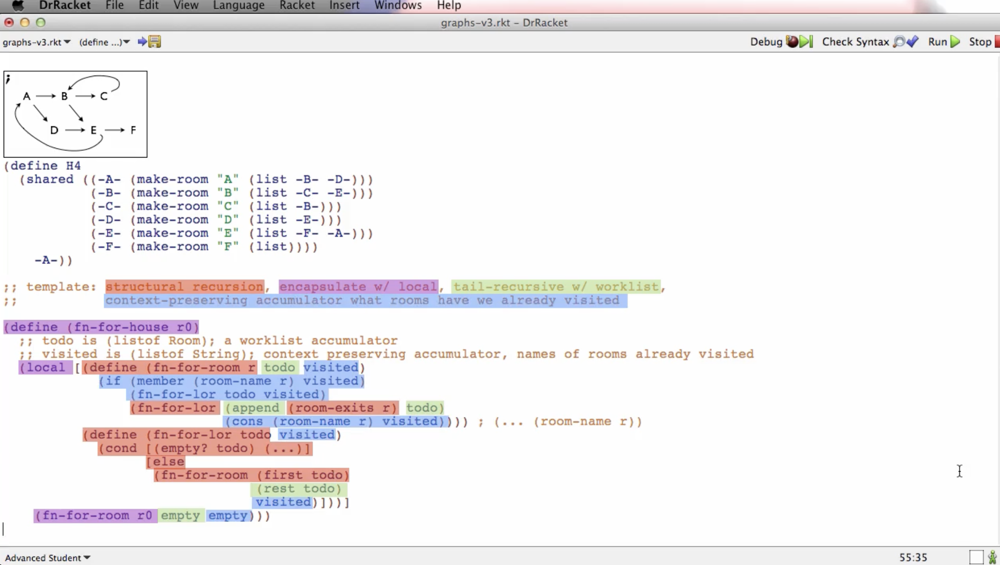

Systematic Program Design: Week 11 (Final Week) - Graphs
Graphs Module
Many forms of information naturally organize themselves into trees of various kinds. But what about transit maps, wiring diagrams, the world wide web or even secret underground passages. Most of these have one or two key properties that make them be graphs instead of trees.
One property is that there are more than one arrows that lead into some node, the other is that the arrows can form cycles.
Once again, this module is in many ways an exercise in what you have already learned. We will start with this new form of information, then use HtDD and HtDF to quickly design powerful functions that operate on graphs.
Working through the videos and practice materials for this module will take approximately 7-8 hours of dedicated time to complete.
Learning Goals
- Be able to identify when domain information naturally forms a graph.
- Be able to write data definitions for graphs.
- Be able to construct cyclic data.
- Be able to design templates that operate on graphs, using accumulators to prevent chasing infinite cycles in the graph.
- Be able to design functions that operate on graphs.
Graphs
This complicated data structure will be easier to work with thanks to our high-level non-code models.
There’s two ways in which a graph can differ from an arbitrary-arity tree.
- It can have cycles
- Can have multiple arrows going to a single node
Going over examples of graphs in code. We are introduced to a new construct called shared, which allows us create cyclic data.
Example of cyclic data structure pointing A to B and B to A:
(define H2
(shared ((-0- (make-room "A" (list (make-room "B" (list -0-))))))
-0-))
Next, we’re trying to come up with a template for this graph data structure.
;; template: structural recursion, encapsulate w/ local, tail-recursive w/ worklist,
;; context-preserving accumulator what rooms have we already visited
The instructor states: notice what I’m doing here. Because I have these clear notion of different contributions to the template, I’m kinda designing up the template structure I want at this high level, at this model-like level. I’m saying I want all of these things before writing a single open parenthesis.
We’re designing the template at a model level, rather than thinking about individual characters of program text.
Any function operating on a house graph will require all these elements in its template.
Instructor says: Notice how at this point of the course, our ability to understand that templates come from multiple sources and that we can blend them together, and that we can do that kind of design up at the design level, we can write a note that says the template is structural recursion, encapsulated with local, tail recursive with a work list, and a context preserving accumulator with the rooms we already visited.
We can sort of have that design thought, systematically turn it into code, and now we got this very useful template.
;; template: structural recursion, encapsulate w/ local, tail-recursive w/ worklist,
;; context-preserving accumulator what rooms have we already visited
(define (fn-for-house r0)
;; todo is (listof Room); a worklist accumulator
;; visited is (listof String); context preserving accumulator, names of rooms already visited
(local [(define (fn-for-room r todo visited)
(if (member (room-name r) visited)
(fn-for-lor todo visited)
(fn-for-lor (append (room-exits r) todo)
(cons (room-name r) visited)))) ; (... (room-name r))
(define (fn-for-lor todo visited)
(cond [(empty? todo) (...)]
[else
(fn-for-room (first todo)
(rest todo)
visited)]))]
(fn-for-room r0 empty empty)))
In the next video we do a practical example using the template.
Using higher-level design concepts breaks down complicated problems to a point where we can solve them systematically and simply
Here is a photo highlighting the relationship between high-level model thinking via template description and the code structure:

I can see how I can use this concept for leetcode problems. The general advice is to learn and understand patterns of implementation. A new way for me to look at it now is to learn and understand the templates or code structure.
And of course, besides leetcode, in the real world. Excited to take this new way of thinking beyond this course!